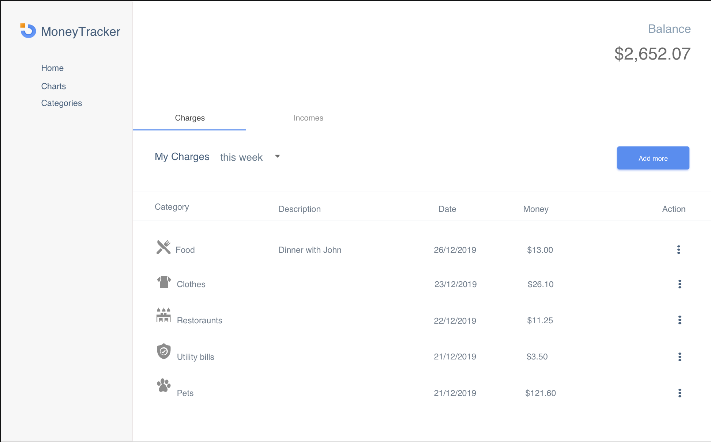
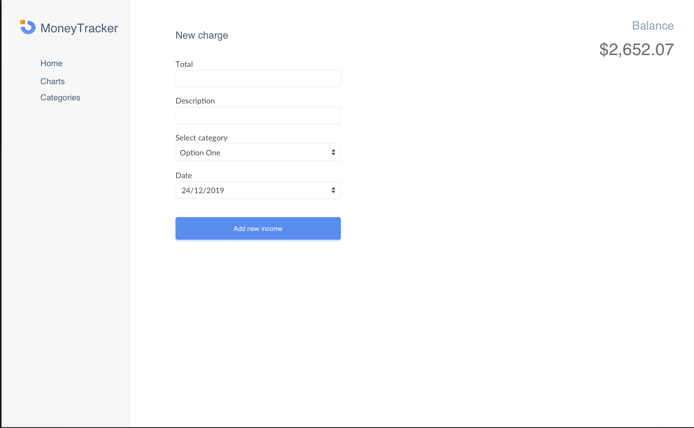
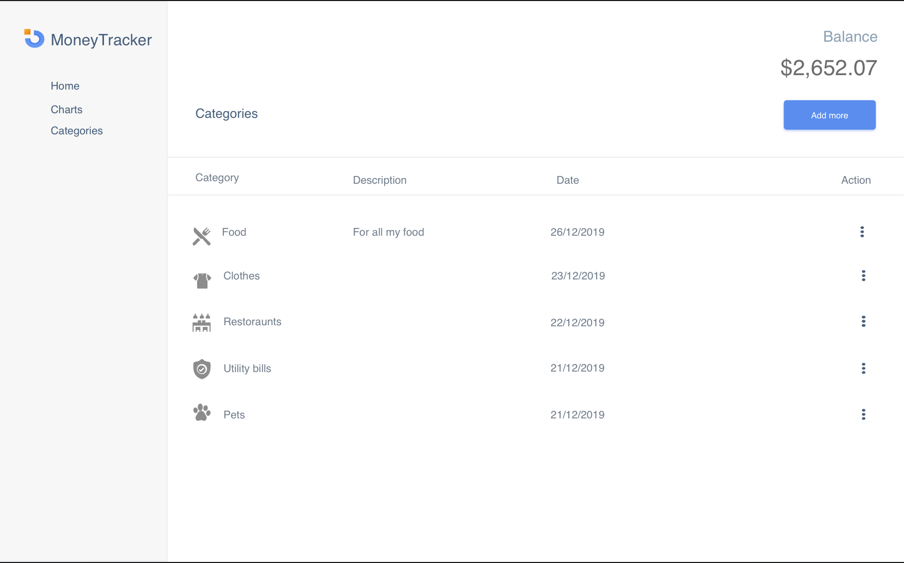
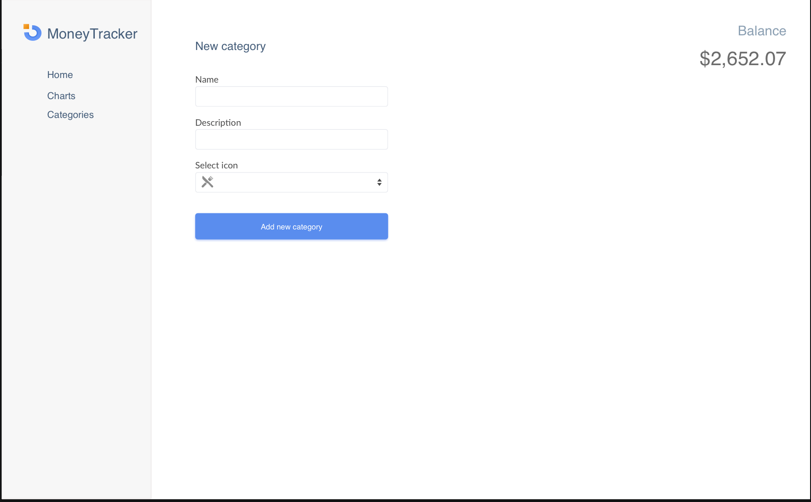
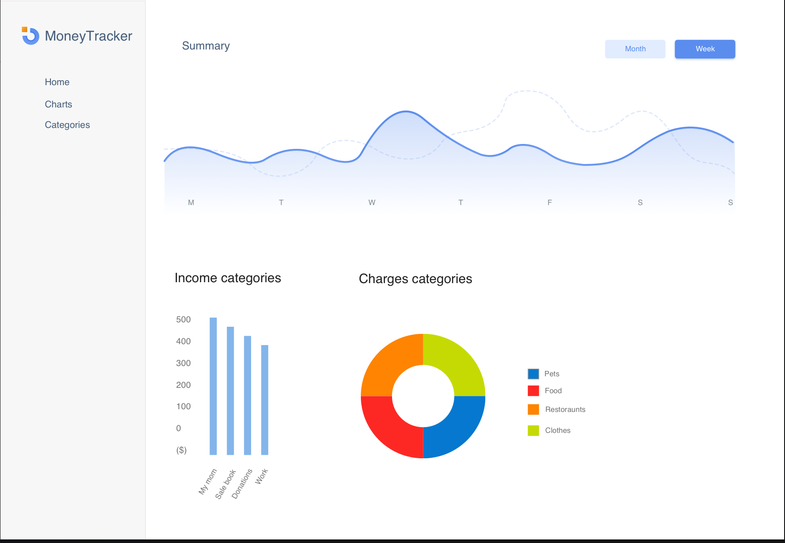

Описание проекта
Задачи
- Необходимо создать веб-приложение для учета доходов/расходов
- Приложение работает без входа, все данные сохраняем в localStorage
- Приложение необходимо делать на реакте. Остальные технологии или библиотеки по желанию
ментора/студентов
Базовый функционал
- При входе приложение отображает таблицу с данными о расходах/доходах. Таблица содержит такие поля:
иконка категории дохода/расхода, сумма, дата, описание(необязательное). Вверху таблицы всегда виден
текущий баланс. Переключение между доходами и расходами происходит по табам
-
Таблицу можно фильтровать по: описание, категория, дата(все время, месяц, неделя, день, произвольный
период)
-
Таблицу можно сортировать по всем столбцам
-
Можно добавить доход или расход, в зависимости от таба (это может быть роут в реакт роутере). При
добавлении можем указать все поля из таблицы. Дата по умолчанию указана сегодняшняя.
-
Предусмотреть возможность редактирования данных в таблице
-
Предусмотреть страницу с настройками. В меню настроек можно создавать/удалять/редактировать категории
расходов и доходов. Для иконок расходов/доходов можно использовать шрифты fontAwesome
-
Отдельной вкладкой создать страницу графики. На графиках необходимо отобразить такие графические
элементы:
- радиальная с расходами по категориям за выбранный период
- общий график расходов и доходов по дням. Ось y суммы, ось x дни. Должно быть две линии различные
по цвету. График можно настраивать: отключать доходы/расходы, корректировать диапазон дней, которые
отображаются.
- Столбчатая диаграмма с категориями дохода
Несколько изображений, которые помогут вам представить задачу
Имейте ввиду это пример, а не инструкция к четкому следованию, вы можете своей командой выбрать цвета и
сделать реализацию красивой!





PDF файл с изображениями
Advanced функционал
-
Добавить страницу настроек. В настройках можно добавить аватар, имя, телефон. (Фото храните как угодно,
serverless технологий хватает)
-
Отображать в каждом расходе и доходе в таблице изображение того, кто его внёс. У нас разумеется
только один человек, но должна быть его фотка везде
-
Добавить на странице настроек галочку: предупреждать когда доступный бюджет станет ниже __ (тут числовой
инпут) % или грн.(можно выбрать)
-
Если указано что необходимо предупреждать о том что бюджет заканчивается – вверху страницы появляется
баннер с текстом: текст придумывайте сами.
-
При добавлении расхода и при установленном предупреждении об окончании бюджета – появляется окно вы
уверены что хотите тратить
деньги на это? Может быть поработаете лучше?
-
Построить прогностический график на основании доходов/расходов на странице графики. Модель
прогнозирования можно выбрать любую, лучше выбирайте какие-то простые линейные модели. Например можно
брать медианное и среднее значение за разные недели и смотреть динамику